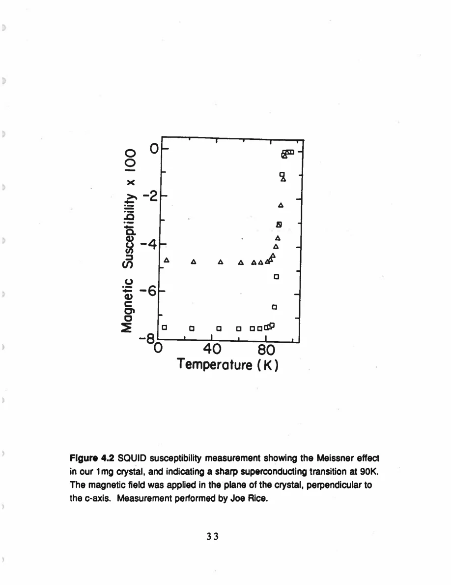
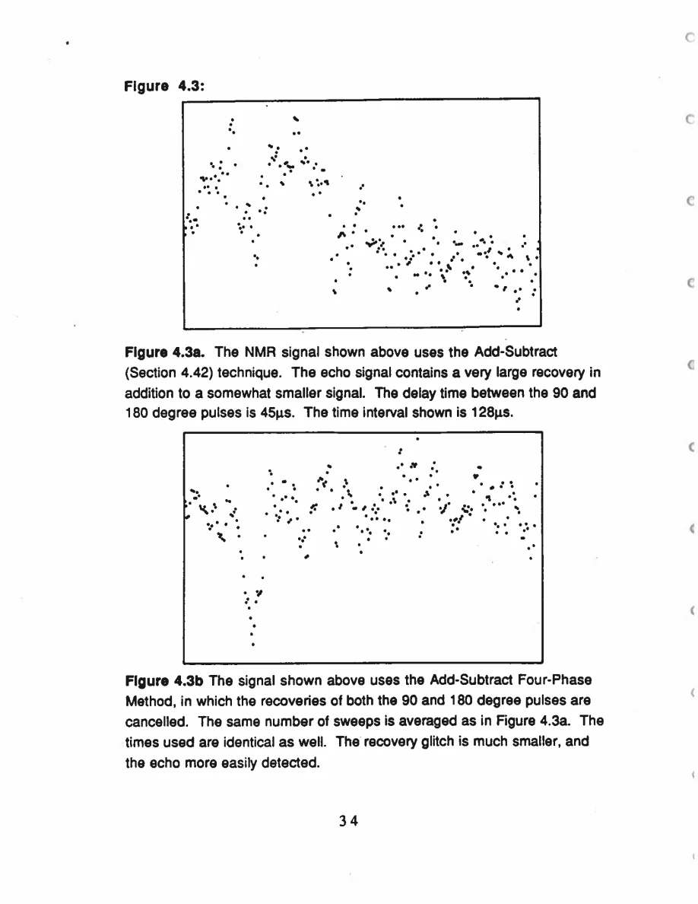

Pennington · supplied source 1989 · chapter unit
3. Making a tiny single crystal measurable
Alignment, phase cycling and interleaved acquisition make the tensor comparisons interpretable.
The question: Which controls prevent instrumental artifacts from becoming microscopic conclusions?
Before you start: the terms you need
- Plane Cu / chain Cu: the two crystallographic copper sites in YBCO
- EFG: electric field gradient, which couples to a nuclear quadrupole moment
- Magnetic shift: the field-proportional frequency change after quadrupole contributions are separated
- W₁: the thesis’s elementary satellite population-transition rate, not automatically 1/T₁
- Redfield contribution: echo decay generated by the fluctuating fields also responsible for population recovery
- Transferred hyperfine coupling: a nuclear spin senses electronic spins through orbital mixing or intervening atoms
See → explain → check
Follow the idea in 3 pictures.
Picture 1 / 3
Hold the geometry fixed
Look for: Follow physical shape into field alignment.
Swipe across the picture to read every label, or enlarge it below.
- Crystal face
- Machined support + optics
- Known field direction
Twinning remains present; alignment does not detwin the sample.
The c-axis plate shape and a/b optics supply directional information.
Picture 2 / 3
Cancel artifacts, add echo
Look for: Track what changes sign during phase cycling.
Swipe across the picture to read every label, or enlarge it below.
- Two-phase echo
- Four-phase echo
The illustrated outcomes describe the original comparison, without recreating its data.
Desired coherence adds while pulse-related ringdown cancels.
Picture 3 / 3
Interleave delay values
Look for: Every fitted point should share the same drift history.
Swipe across the picture to read every label, or enlarge it below.
- Delay 1 → delay 2 → …
- Repeat complete cycle
- Separate accumulated arrays
Teaching acquisition sequence, not a new hardware specification.
Cycling delays throughout averaging limits bias from slow instrumental changes.
Check the original: PDF p. 42 · PDF p. 133
Explain it back.
Try answering aloud before opening the explanation.
Why use silver instead of copper wire?
To avoid spurious Cu NMR signals from the coil.
Why interleave all recovery delays during hours of acquisition?
It distributes any instrumental drift across all fitted points instead of correlating it with delay.
Go deeper Follow the full argument
Field, sample and detection
The static field is 81.2 kG, or 8.12 T, corresponding to a⁶³Cu reference frequency 91.628 MHz in CuCl. The crystal is a flat approximately 1×1×0.15 mm plate, whose shortest dimension follows c. The work progresses from a multiple-crystal sample in earlier measurements to one roughly 1 mg crystal. Its superconducting transition near 90 K is characterized by SQUID susceptibility; field-cooled and zero-field-cooled responses need not be identical because flux trapping can matter. A silver-wire rf coil avoids copper background signals from the coil itself, and a small coil improves sample filling. Quadrature detection measures two orthogonal phases at once. These details explain the long averaging periods and sensitivity strategy; they are not evidence of a particular electronic model.
Alignment and twinning
For H₀∥c, the flat crystal face is mounted on a support machined perpendicular to the probe’s rigid rod and field direction. Matching line positions and widths between a single crystal and an aligned multiple-crystal assembly provides a check on alignment. For in-plane fields, a modified mount ensures H₀⊥c, then crossed-polarized microscopy identifies an a/b principal direction. Twinning means this procedure places some domains along a and others along b. It does not produce an untwinned sample. One must therefore read the resulting multiple peaks as domain-weighted directional components before proposing additional electronic phases. The author reports approximately 1° in-plane alignment precision. For detailed spectra, the remaining assignment ambiguity of some a/b satellite labels is stated explicitly instead of being hidden inside tensor tables.
Phase control and drift
A short echo delay helps recover a rapidly decaying Cu signal, but rf pulses can leave receiver overload or coil ringdown at the intended echo time. The add-subtract echo cancels one pulse-related contribution; a four-phase scheme is designed to cancel ringdown from both echo pulses while adding the desired echo coherently. Figure 4.3 compares the two with identical timing and number of sweeps. Inversion recovery additionally risks stimulated echoes when the inversion pulse is imperfect; reversing that pulse’s phase cancels unwanted transverse terms. For long acquisitions, the pulse sequence cycles through all delay parameters and stores their results separately. Every point then experiences the same hours of possible apparatus drift. Measuring all early delays first and all late delays last would create a systematic risk that an apparent decay is partly instrument drift.
PDF p. 39 · PDF p. 40 · PDF p. 41 · PDF p. 42 · PDF p. 46 · PDF p. 137 · PDF p. 138 · PDF p. 139
Translate the mathematics Essential equations and their meaning
Echo sequence:90° — τ_delay —180° — τ_delay —echo
Symbols: τ_delay: fixed delay between the two pulses; total echo evolution time 2τ_delay
Varying the delay measures the echo envelope; phase cycling suppresses artifacts without changing this geometry.
Read the evidence Guided original source pages

PDF p. 45

PDF p. 46
What the evidence supports—and where it stops
- This is a description of historical apparatus, not a present instrument-construction recipe.
- A SQUID transition validates sample superconductivity but does not identify the source of a normal-state NMR rate.
Source version, reading coverage and preservation
All 146 scanned pages rendered and locally OCR-recognized with Windows.Media.Ocr. Research prose of PDF 13–139 read in full; source-specific formulas and selected complete page figures inspected individually. PDFpage=printedpage+12.
Reviewed body pages: 13, 14, 15, 16, 17, 18, 19, 20, 21, 22, 23, 24, 25, 26, 27, 28, 29, 30, 31, 32, 33, 34, 35, 36, 37, 38, 39, 40, 41, 42, 43, 44, 45, 46, 47, 48, 49, 50, 51, 52, 53, 54, 55, 56, 57, 58, 59, 60, 61, 62, 63, 64, 65, 66, 67, 68, 69, 70, 71, 72, 73, 74, 75, 76, 77, 78, 79, 80, 81, 82, 83, 84, 85, 86, 87, 88, 89, 90, 91, 92, 93, 94, 95, 96, 97, 98, 99, 100, 101, 102, 103, 104, 105, 106, 107, 108, 109, 110, 111, 112, 113, 114, 115, 116, 117, 118, 119, 120, 121, 122, 123, 124, 125, 126, 127, 128, 129, 130, 131, 132, 133, 134, 135, 136, 137, 138, 139. Acknowledgments and biography are not teaching material. Bibliography not independently verified against external publications. Mathematical derivations are summarized at final-result level; not every algebraic line independently reconstructed.
Source SHA-256: 85b6d3c8d20ccc23476bf72473860248d5228e16892afefa8dec6c7054d43c26. Original file bytes preserved locally, and in this room’s original download.
Thesis - Pennington - 1989 - Single crystal NMR of high temperature superconductors.pdf